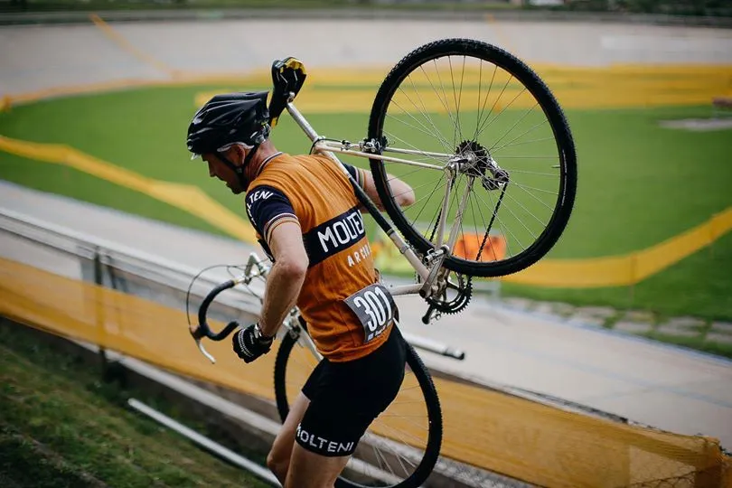
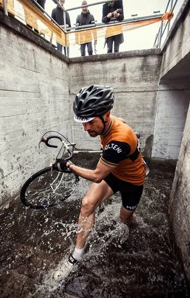
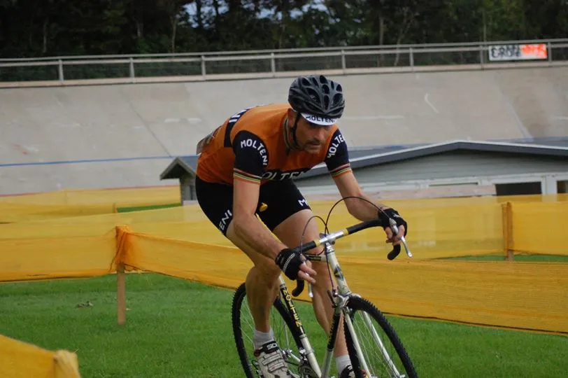
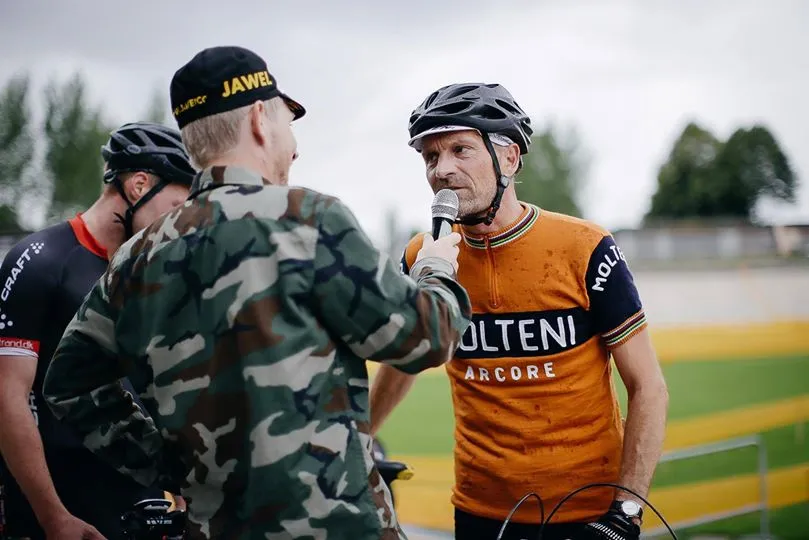

Løbsberetning: Grote Prijs Vol V #merelarm

Grote Prijs CK Aarhus vol. V Den hvide “Molteni Inverno” havde fået afmonteret skærmene og fået et sæt Michelin 700C x 30 knopdæk på, uldcykeltøjet var nyvasket og benene var klar efter torsdagens Grand Prix G.S. Velopresse.
Startskudet til den åbne klasse lød – og Squadra Moltenis Niels Bjørnsteen kørte ud på sit første cykelcrossløb nogensinde. Crossløbet der ikke er for srate sjæle.

Trods den ringe erfaring med disciplinen var ambitionen den samme som ved hvert løb Squadra Moltenis ryttere stiller op til – nemlig en sejr.
Bjørnsteen lagde hårdt ud, gav den gamle stålramme én over nakken – og fulgte med de førende ryttere.
Grote Prijs Vol. V: Tempoet var hårdt og ruten brutal.
– Det var tungt græs, trapper op, mudrede skrænter og ikke mindst en betontunnel, som var oversvømmet med 30-40 cm. vand!, fortæller Bjørnsteen.

Efter et par omgange var to ryttere trukket fra. Bjørnsteen hægtede sig på 3’eren. Men midt i løbet fik en af de to førende ryttere defekt.
Bjørnsteen rykkede og lå pludselig på 2. pladsen.
I finalen kom 3’eren dog op, viste stor styrke – og henviste Bjørnsteen til en 3. plads.

Grote Prijs CK Aarhus vol. V var en fantastisk oplevelse.
Der var stemning og fest. Musik og gøgl. En totaloplevelse udover det sædvanlige.
Og det dér med cykelcross – det skal der køres noget mere af, lyder det fra Squadra Moltenis Niels Bjørnsteen

Fotos: Uggi Kaldan, Mikkel Beck og Frederik Bjørnsteen
- Molteni Inverno: Ramme Reynolds 531c (Gazelle A-frame)
- Campagnolo GS krank
- Rigida fælge, Campagnolo nav
- Modolo Speedy bremsegreb og -klør
- Sella Italia Turbo Matic sadel
- Dæk: Michelin 700C x 30 Cross